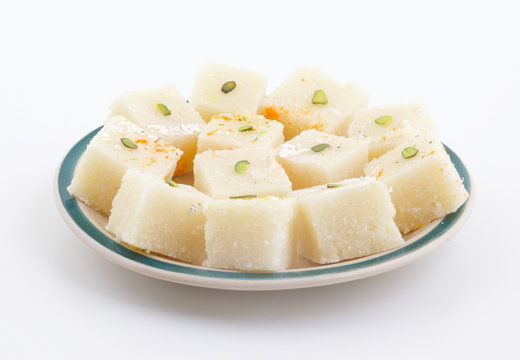
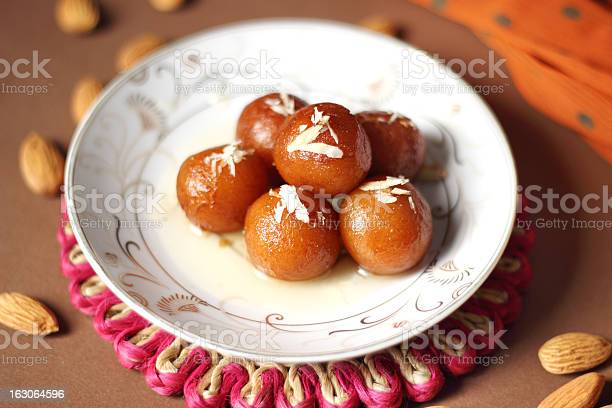

BARFI
Ingredients
- Sugar
- Condensed Milk
- Ghee
- Milk Powder
Recipe
- Take a large bowl and add milk powder to it along with milk. Make a rigid dough using these ingredients. Once done, keep the dough in the freezer and freeze it for at least for 20 minutes.
- Take the dough and grate it in a bowl. Keep this grated dough aside for further usage. Take a deep bottomed pan, keep it on low flame and heat ghee in it.
- Add the grated dough to this pan with water. Mix well and stir in cardamom powder in the pan. Cook this mixture until the water dries out and the mixture accumulates in the centre of the pan.
- Pour this prepared mixture into a greased tray and garnish it with almonds and pistachios. Let the mixture cool down and cut the barfi into desired shapes. Garnish it with silver varq and serve!

GULAB JAMUN
Ingredients
- Sugar
- Milk
- Khoya
- Maida
- Baking soda
Recipe
- Take required quantity of sugar and water in a deep pan. Stir and bring to boil on high flame for sugar to dissolve.
- Now add milk and cardamom seeds to the sugar water. Boil further and strain.
- Then add saffron and cardamom powder and bring the mixture to rolling boil for about 5-6 minutes until it becomes little sticky.
- Take the grated Khoya in a medium size deep bowl.
- Add baking soda and maida. Combine them thoroughly but gently using a spoon.
- Add a teaspoon of milk to it and knead all of them together to make a smooth and soft dough. Add another teaspoon of milk if required.
- Divide the dough into equal parts and make smooth surfaced balls out of it.
- Now heat ghee in a pan over medium flame and add the Jamun balls to deep-fry them. Cook evenly until it becomes golden brown
